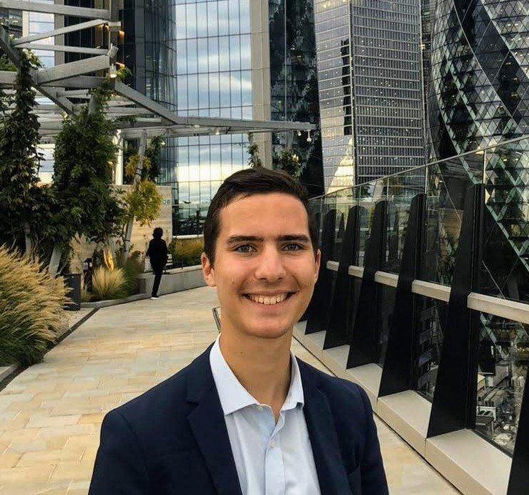

PORTFOLIO
ADAM LOUIS SEBASTIAN LEHODEY. What drives me is a desire to grow, learn, and explore. Over the past few years I’ve done just that, having taken two gap-years after sixth form. I spent my time working for a Member of the British Parliament where I gained a deep understanding of British and international politics, foreign affairs, and research methodology. I also leveraged this time to travel extensively across Europe and North America, an unforgettable experience. Now studying on a dual-degree programme between SciencesPo Paris and Columbia University, New York, the aim is to consolidate and reinforce my understanding of economics, history, and mathematics.

Fluent in French, English, Spanish, and learning Italian, se ve que me encantan los idiomas. I express this through my writing, of which one of the greatest inspirations for the essays and articles I write on my blog are conversations I’ve had with friends and others I’ve met on my journeys. My motivation to write is to share and develop my own ideas, to start a conversation, and because prose is inherently beautiful. If you’re interested in ideas on subjects as varied as philosophy, cultural history, and urbanism, check out my ‘essays and articles’ page now. For any business or personal enquiries, please reach out via the ‘contact me’ page. -Adam